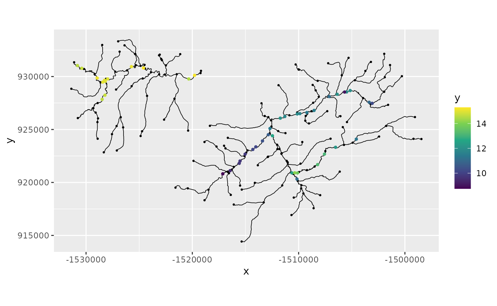

An example with a river graph model
David Bolin, Alexandre B. Simas, and Jonas Wallin
Created: 2024-08-08. Last <<<<<<< HEAD modified: 2024-08-20.
Source:vignettes/river_example.Rmd
=======
modified: 2024-08-19.
Source: vignettes/river_example.Rmd
>>>>>>> 7d5e007f72e1705b8671582ffb9468ceaaf4bada
river_example.RmdIntroduction
In this vignette we explore how to build a directional graph model on
a river network. The data is imported from the package
<<<<<<< HEAD
SSN2.
SNR2.
>>>>>>> 7d5e007f72e1705b8671582ffb9468ceaaf4bada
Setting up the data
Here we take the data as is described in the Vignette
<<<<<<< HEAD
of SSN2. We will use the geometry object
=======
of SNR2. We will use the geometry object
>>>>>>> 7d5e007f72e1705b8671582ffb9468ceaaf4bada
from the SSN object to build the metricGraph
object. We also load the observations and the relevant covariates. We
assume that in the geometry object the lines are so that
they go downwards along the river.
library(MetricGraph)
library(SSN2)
copy_lsn_to_temp()
path <- file.path(tempdir(), "MiddleFork04.ssn")
mf04p <- ssn_import(
path = path,
predpts = c("pred1km", "CapeHorn"),
overwrite = TRUE
)
<<<<<<< HEAD
graph <- metric_graph$new(mf04p$edges$geometry, perform_merges = FALSE)
=======
graph <- metric_graph$new(mf04p$edges$geometry, longlat = FALSE)
>>>>>>> 7d5e007f72e1705b8671582ffb9468ceaaf4bada
obs_coords <- sf::st_coordinates(mf04p$obs)
data <- data.frame(coordx = obs_coords[,1],
coordy = obs_coords[,2],
y = mf04p$obs$Summer_mn,
elev = mf04p$obs$ELEV_DEM,
slope = mf04p$obs$SLOPE,
netid = as.factor(mf04p$obs$netID))
graph$add_observations(data = data,
data_coords = "spatial",
coord_x = "coordx",
coord_y = "coordy")## [1] coordx coordy y elev slope netid
## <0 rows> (or 0-length row.names)We can now visualize the river and the data
graph$plot(data = "y", vertex_size = 0.5) # Non directional models We start with fitting the non directional models.
#fitting model with different smoothness
<<<<<<< HEAD
model.wm1 <- graph_lme(y ~ elev + slope + netid, graph = graph, model = 'wm1')
model.wm2 <- graph_lme(y ~ elev + slope + netid, graph = graph, model = 'wm2')We also create the cross validation results to see how the models perform. Here we see that setting \(\alpha=2\), i.e. one time differential, has a much worse performance compared to \(\alpha=1\), i.e. continuous but non-differential.
======= model.wm1 <- graph_lme(y ~ elev+slope + netid, graph = graph, model = 'WM1') model.wm2 <- graph_lme(y ~ elev+slope + netid, graph = graph, model = 'WM2')
## Warning in graph_lme(y ~ elev + slope + netid, graph = graph, model = "WM2"):
## All optimization methods failed to provide a positive-definite Hessian. The
## optimization method with largest likelihood was chosen. You can try to obtain a
## positive-definite Hessian by setting 'improve_hessian' to TRUE.## Warning in sqrt(diag(inv_fisher)): NaNs producedWe also create the cross validation results to see how the models perform. Here we see that setting , i.e. one time differential, has a much worse performance compared to , i.e. continuous but non-differential.
>>>>>>> 7d5e007f72e1705b8671582ffb9468ceaaf4bada
cross.wm1 <-posterior_crossvalidation(model.wm1)
cross.wm2 <-posterior_crossvalidation(model.wm2)
cross.scores <- rbind(cross.wm1$scores,cross.wm2$scores)
rownames(cross.scores) <- c("alpha=1","alpha=2")## Warning: Setting row names on a tibble is deprecated.=======>>>>>>> 7d5e007f72e1705b8671582ffb9468ceaaf4bada>>>>>>> 7d5e007f72e1705b8671582ffb9468ceaaf4badaprint(cross.scores)======= ## 1 0.800 0.283 0.724 0.371 0.519 ## 2 1.39 0.534 1.03 0.700 0.968## # A tibble: 2 × 5 ## logscore crps scrps mae rmse ## * <dbl> <dbl> <dbl> <dbl> <dbl> <<<<<<< HEAD ## 1 0.792 0.278 0.717 0.353 0.504 ## 2 0.827 0.292 0.743 0.382 0.530
Directional models
We now start with fitting various directional model. We start with
having the “boundary condition” that at an edge the sum of the downward
vertices should equal the upward vertices. That is if we have three
<<<<<<< HEAD
edges \(e_1,e_2,e_3\) connected so that
\(e_1,e_2\) merge into \(e_3\) we have at the vertex connecting them
\[
u_{e_3}(v) = u_{e_1}(v) + u_{e_2}(v).
\] This is the default option in metricGraph and is
created by:
res.wm1.dir <- graph_lme(y ~ elev + slope + netid, graph = graph, model = 'wmd1')Here one can see a big improvement by adding using the directional model over the non directional.
======= edges connected so that merge into we have at the vertex connecting them This is the default option inmetricGraphand is created by:Here one can see a big improvement by adding using the directional model over the non directional.
>>>>>>> 7d5e007f72e1705b8671582ffb9468ceaaf4badacross.wm1.dir <-posterior_crossvalidation(res.wm1.dir) cross.scores <- rbind(cross.scores,cross.wm1.dir$scores) print(cross.scores)## # A tibble: 3 × 5 ## logscore crps scrps mae rmse ## * <dbl> <dbl> <dbl> <dbl> <dbl> <<<<<<< HEAD ## 1 0.792 0.278 0.717 0.353 0.504 ## 2 0.827 0.292 0.743 0.382 0.530 ## 3 0.379 0.214 0.537 0.296 0.400We could use other constraints. For instance in .. the authors used constraint not so the sum is equal but rather the variance of the in is constant which is obtained by \[ u_{e_3}(v) = \sqrt{w_1}u_{e_1}(v) + \sqrt{w_2}u_{e_2}(v). \] here the weights are set by the edge variable
h2. To make this work in the metricgraph package one uses the following linegraph$set_edge_weights(weights= data.frame(h2 = mf04p$edges$h2oAreaKm2), directional_weights = 'h2') graph$setDirectionalWeightFunction(f_in = function(x){sqrt(x/sum(x))}) res.wm1.dir2 <- graph_lme(y ~ elev+slope + netid, graph = graph, model = 'wmd1')Here we see a slight dip in performance but still much better than the symmetric version.
======= ## 1 0.800 0.283 0.724 0.371 0.519 ## 2 1.39 0.534 1.03 0.700 0.968 ## 3 0.371 0.212 0.532 0.289 0.396We could use other constraints. For instance in .. the authors used constraint not so the sum is equal but rather the variance of the in is constant which is obtained by here the weights are set by the edge variable
h2. To make this work in the metricgraph package one uses the following line## Warning in graph_lme(y ~ elev + slope + netid, graph = graph, model = "wmd1", : ## All optimization methods failed to provide a positive-definite Hessian. The ## optimization method with largest likelihood was chosen. You can try to obtain a ## positive-definite Hessian by setting 'improve_hessian' to TRUE.## Warning in sqrt(diag(inv_fisher)): NaNs producedHere we see a slight dip in performance but still much better than the symmetric version.
>>>>>>> 7d5e007f72e1705b8671582ffb9468ceaaf4badacross.wm1.dir2 <-posterior_crossvalidation(res.wm1.dir2) cross.scores <- rbind(cross.scores,cross.wm1.dir2$scores) print(cross.scores)## # A tibble: 4 × 5 ## logscore crps scrps mae rmse ## * <dbl> <dbl> <dbl> <dbl> <dbl> <<<<<<< HEAD ## 1 0.792 0.278 0.717 0.353 0.504 ## 2 0.827 0.292 0.743 0.382 0.530 ## 3 0.379 0.214 0.537 0.296 0.400 ## 4 0.493 0.226 0.593 0.315 0.405